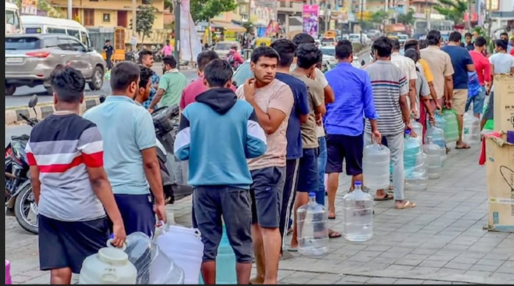

At one point, Bangalore was known as ‘the city of lakes
because of the large number of water bodies that scattered the region. Even now, it is a city with more
than a hundred lakes and a thousand water bodies. As time passed, however, most of these bodies, and
especially the major lakes like Varthur and Bellandur, were subjected to high levels of pollution.
Bangalore’s industrial growth has contributed to water pollution. Karnataka State Pollution
Control Board (KSPCB) stated in 2021, industrial units in and around Bangalore were discharging
a substantial amount of untreated or partially treated effluents into water bodies, contaminating them.
Consequently, many locals and long-term residents who relied on the bodies of water either for income,
sustenance, or both, suffered great economic, environmental, and medical setbacks to their way of life.
The link between SDG-6 and water pollution is central
to achieving sustainable development and ensuring universal access to clean water and adequate
sanitation for all.SDG-6 focuses on “ensuring availability
and sustainable management of water and sanitation for all” and encompasses several targets related to
water quality, pollution reduction, and ecosystem protection.
Addressing water pollution is vital to
achieving SDG-6 and broader sustainable development.
Governments, communities, and businesses must collaborate to implement effective water pollution control
measures, invest in wastewater treatment, promote sustainable industrial practices, and raise awareness
about responsible water usage to safeguard water resources and achieve the targets outlined in SDG-6
This situation will persist as long as we are
no aware of the situation and will work towards the developmentof the city rather than just making
things worse for our own purpose.